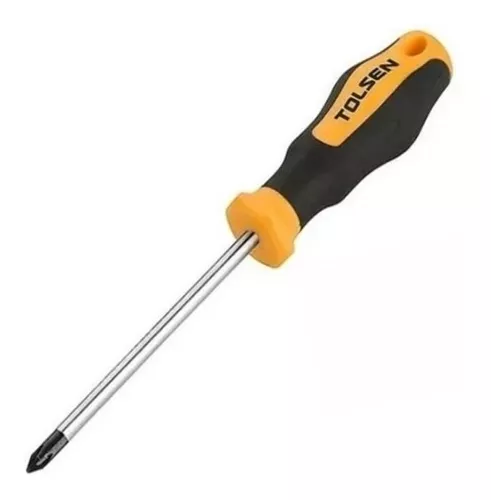
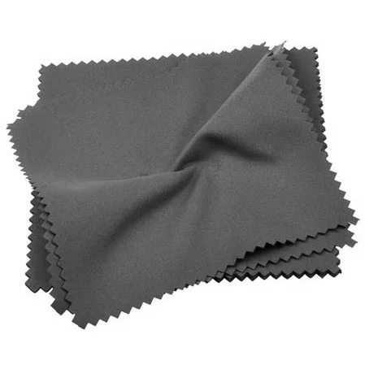
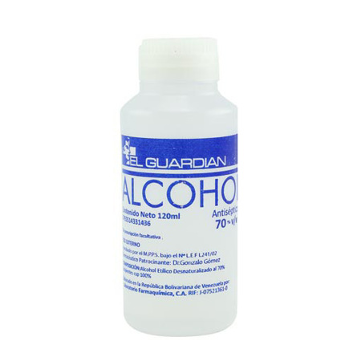
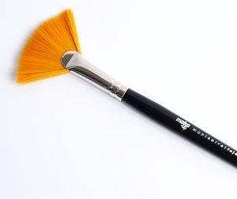

Contenido
Los equipos del Centro Diagnostico Integral "Hugo Chavez" requieren de una limpieza completa, ya que estos llevan un año desde la ultima vez que se les ha hecho un mantenimiento, y todo ese tiempo ya les esta empezando a afectar a estos equipos, ya que estos actualmente presentan recalentamiento y se esta viendo afectado el rendimiento de algunos equipos.
Primeramente, para poder realizar el mantenimento a las computadoras el Centro Diagnostico Integral"Hugo Chavez", se requerira usar los siguientes materiales:
- Destornilladores
 - Paño de Microfibras
 - Alcohol Isopropilico
 - Pincel

Ahora con los materiales ya definidos pasamos a los procesos a realizar, primeramente se desconectaran las computadoras y se les abriran las tapas luego comenzariamos a
desconectar algunos componentes como la unidad de dvd, la ram, el fancooler... para que no estorben durante la limpieza y ademas para poder limpiarlos mejor separadamente,
luego de eso se comienza con la limpieza de la placa base le pasamos primeramente el pincel para desempolvar la zona y luego pasamos el paño de fibras humedecido con alcohol
Isopropilico para dacar definitivamente la suciedad acumulada, igualmente, pasamos el paño en los componentes desconetados para limpiarlos, ahora con los componentes ya limpios
ahora ya con todos los componentes ya limpios, procedemos a volver a colocarlos en su sitio, ya con los componentes ya conectados, procedemos a probar la funcionalidad del equipo encendiendolo y listo, limpieza del gabinete completada.
Ya con los gabinetes limpios procederemos a empezar con las limpiezas de los teclados y los mouses, en el caso del teclado lo desatornillamos por abajo para poder abrirlo
luego separamos la membrana digital y le pasamos el pincel por encima y luego a la membrana de silicona le pasamos el paño con alcohol, despues comenzamos a sacar y limpiar limpiar la zona
de las teclas ya con eso listo vamos lo rearmamos tal cual como estaba.
Y ahora comienza la limpieza del mouse, se abre por debajo se limpia la rueda, se desmpolva el interior con el pincel, se le pasa el paño con alcohol y listo, completada la limpieza del teclado y el mouse